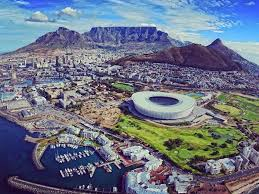
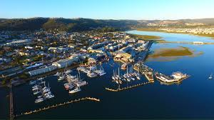
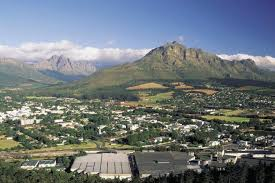
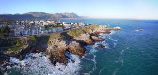

Western Cape is a province of South Africa, situated on the south-western coast of the country. It's the fourth largest of the nine provinces and the third most populous. The Western cape was created in 1994 from part of the former Cape province. Cape Town is the provincial capital.
The following images are places you can explore in Western Cape
   1.Cape Town-Table mountain(for hiking, climbing & biking), Cape of Good Hope(scenic spot & tip of the Peninsula), Kirstenbosch National Botanical Garden(Nature reserve with mountain views) and Boulders Beach(sandy cove with resident penguin colony).
2.Knysna-Brenton-on-sea(Beaches,butterflies and paragliding), Featherbed private nature reserve(forested landscape along a lagon, Garden Route National Park(coastal parkland with forests & trails), view point Eastern Knysna head.
3.Stellenbosch-Boschendal cottages(upscale farmsttey on a wine estate), Jonkershoek Nature Reserve(reserve with mountains, hiking & more), Jonkershoek road(outdoor recreation) and Jordan Wine Estate(modern South African cuisine & wines).
4.Hermanus-Grotto Beach[Blue flag](Beach & Whale watching), Cape whale coast wine routes(whale watching), Fernkloof Nature Reserve(scenic reserve with trails & gardens) and Cliff path(whale watching and cetaceans).
1.Two oceans Marathon
2.Cape Town Cycle Tour
3.Cape Epic
4.IAAF World Cross Country Champions
5.UCI mountain Bike world cup